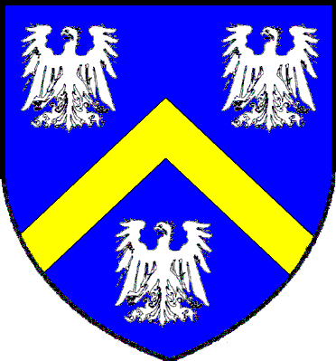

retour aux Bulletins d'Informations Municipales
|
INFORMATIONS MUNICIPALES 1993 |
 |
Le SIVOM de l'Elle et de la Vire avait souhaité faire un "état des lieux" du Canton. Une enquête a été réalisée par la Chambre d'Agriculture en coordination avec Manche Développement.
Je livre à votre réflexion et à votre analyse l'essentiel des résultats.
|
|
|
|
|
Nombre d'exploitations (+ de 4ha400 |
|
|
|
Réf. laitière par hectare |
|
|
|
Réf. moyenne/exploitation laitière |
|
|
|
Chef d'exploitation de + de 50 ans |
|
|
|
Exploitations de + de 50 ha |
|
|
|
Exploitations
ayant une réf. laitière |
|
|
Sans aucune certitude et en état actuel des connaissances, dans les 5 à 10 ans qui viennent, 3 exploitations pourraient être reprises par un descendant, 7 ou 8 seraient éclatées.
Il resterait environ 10 exploitations à temps complet.
- Dans le Canton, 10 communes sur 14 ont plus de 50% de la population active qui travaille à l'extérieur de leur commune de résidence, en grande majorité à Saint Lô (Villiers-Fossard 70%), la survie et l'avenir du Canton est étroitement lié à l'évolution de l'emploi dans le bassin et dans la ville de Saint Lô.
- Dans le Canton, 136 logements ou habitations sont à rénover, 16 bâtiments à usage professionnel sont disponibles. Le potentiel est à prendre en compte si l'on veut faire évoluer ou tout au moins maintenir la population.
- Dans le Canton, 145 entreprises artisanales et commerciales (- de 400 m2) emploient 340 personnes (une densité supérieure à la moyenne départementale et nationale). Le tissu industriel : c'est 10 entreprises employant 436 personnes.
- En matière de tourisme, le canton possède 31 lits en Chambre d'Hôtes et 76 lits en Gîtes Ruraux.
Lors de la présentation des résultats, quelqu'un a dit :"On ne peut envisager l'avenir comme on a géré le passé", un certain nombre d'élus l'ont compris si j'en crois les avis favorables à la constitution d'une Communauté de Communes émis à St Clair, le 4 juin dernier.
Il faudra encore avant la fin de l'année que chaque Conseil Municipal examine le projet de statuts et définisse ce qu'il attend de la Communauté et entérine cette décision.
Votre maire.
COMPARAISON DES TAUX D'IMPOSITION DU CANTON
|
TAUX |
TFB |
TFNB |
TH |
TP |
|
Airel |
19,58 |
32,70 |
9,53 |
8,06 |
|
Bérigny |
10,36 |
24,68 |
7,59 |
3,03 |
|
Cerisy |
12,12 |
36,49 |
9,46 |
16,23 |
|
Couvains |
9,00 |
26,36 |
6,46 |
8,20 |
|
La Meauffe |
10,41 |
34,42 |
11,06 |
6,07 |
|
Moon |
20,39 |
38,30 |
10,05 |
7,31 |
|
Notre Dame |
9,70 |
30,96 |
7,10 |
7,67 |
|
St André |
6,45 |
21,29 |
6,28 |
3,08 |
|
St Clair |
15,59 |
38,07 |
9,43 |
4,82 |
|
St Georges |
13,43 |
26,77 |
9,12 |
5,76 |
|
St Germain |
9,30 |
24,40 |
6,28 |
6,78 |
|
St Jean |
10,58 |
28,94 |
6,05 |
3,02 |
|
St Pierre |
11,20 |
30,00 |
9,40 |
8,54 |
|
Villiers |
9,52 |
32,03 |
6,65 |
4,45 |
|
MOYENNE DEPARTEMENTALE |
14,46 |
27,88 |
7,05 |
4,79 |
|
MOYENNE REGIONALE |
13,57 |
26,23 |
6,91 |
4,96 |
TFB : Taxe Foncière
Bâti
TFNB : Taxe Foncière Non
Bâti
TH : Taxe d'Habitation
TP : Taxe Professionnelle